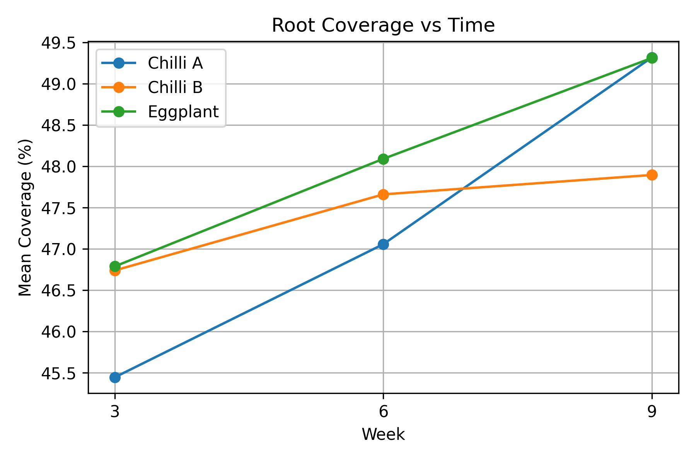
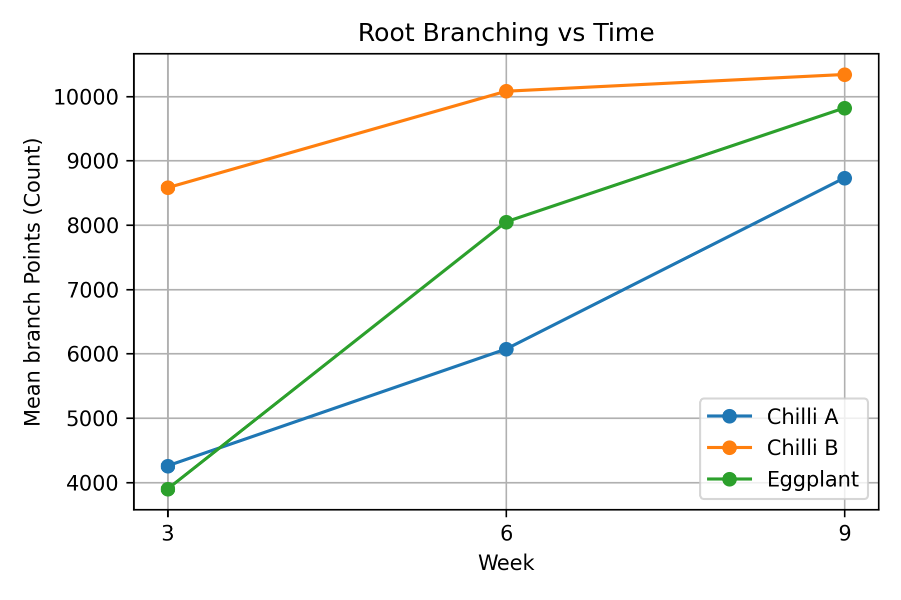

Root Development Summary
This page presents root morphology metrics extracted from microscope images after AMF application. Image processing was used to quantify root coverage (percentage of root pixels in the image) and root branching (estimated branch points from skeletonization). These metrics provide a consistent way to compare root progression across Week 3, Week 6, and Week 9.

Root Coverage (%) vs Time (Week 3, 6, 9)

Root Branching Points vs Time (Week 3, 6, 9)